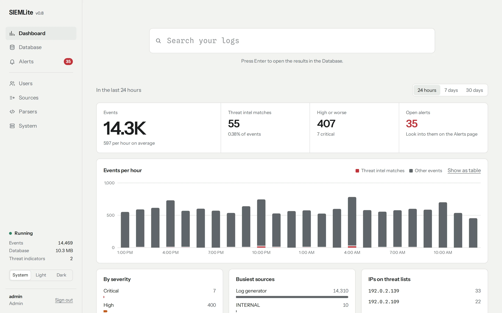
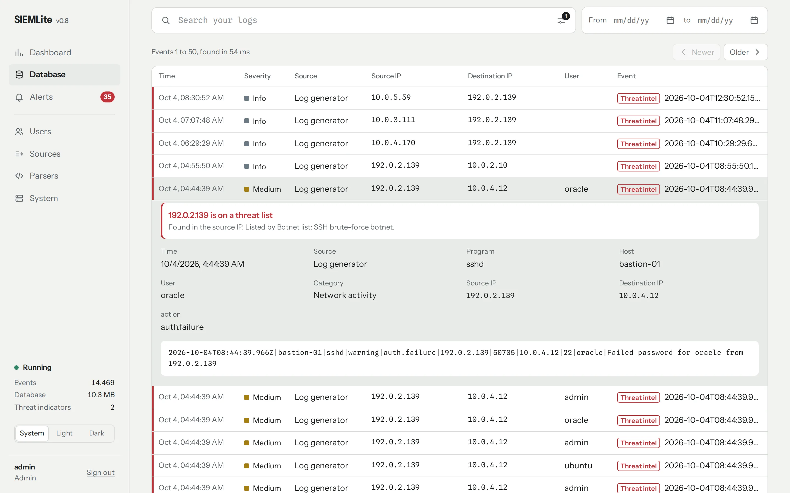
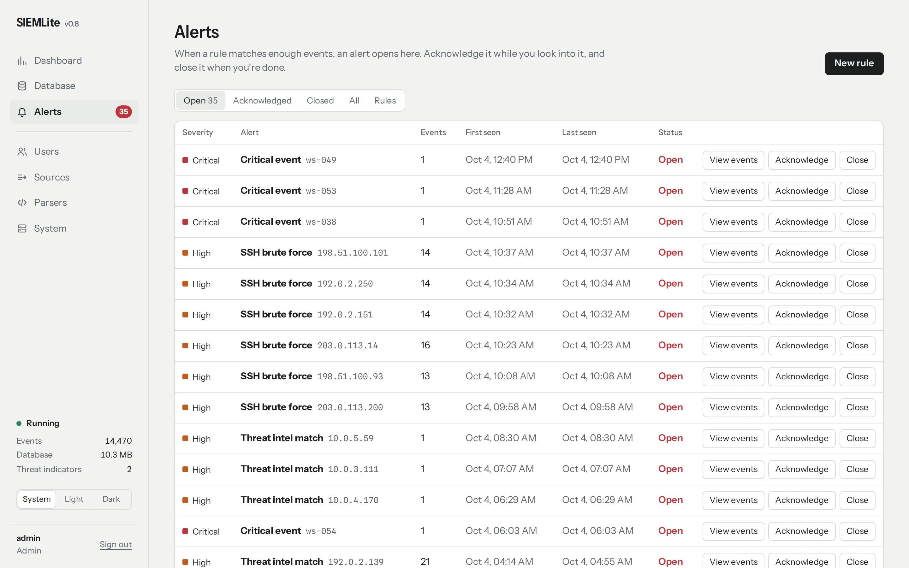
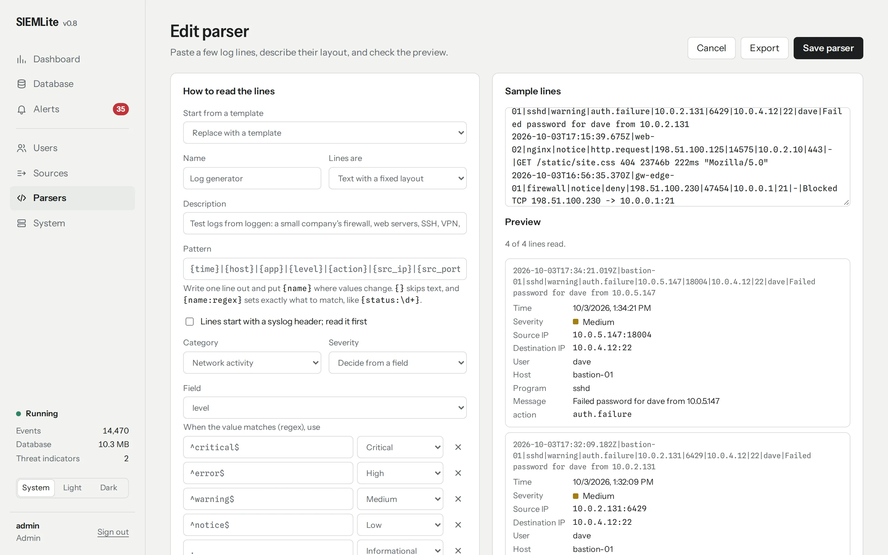
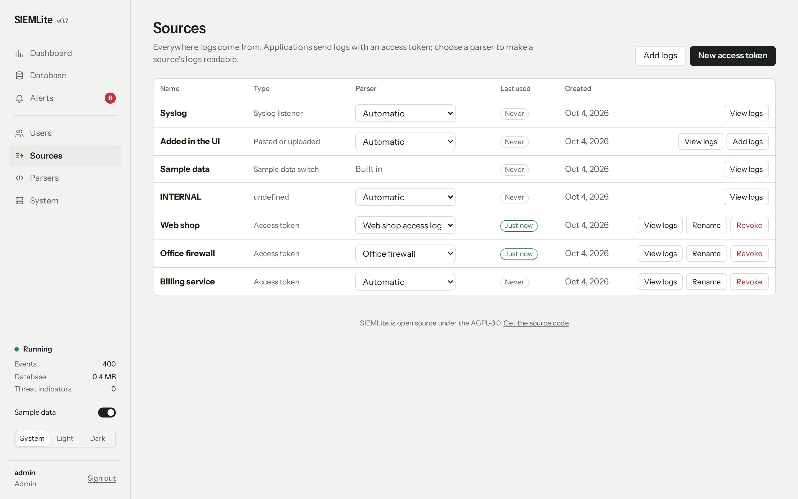
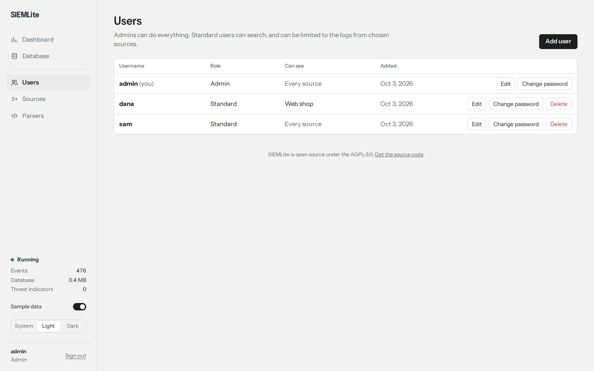
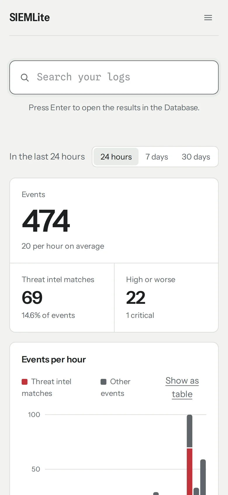

A SIEM in a single Go binary.
Collect logs over HTTPS or syslog, teach SIEMLite to read them, check every event against threat intel, and search it all from one quiet page. One executable, one SQLite file, one command to run it with Docker.

The Dashboard: the last 24 hours at a glance, with threat matches in red and the alerts waiting for you. The events came from loggen.
From a line of text to an answer
Every screenshot here is SIEMLite itself, fed by loggen: a day of ordinary traffic from a small company, with
brute-force attacks hidden in it. Run loggen -eps 10 next to your own copy to get the same kind of events.
Find out what happened
The Database lists every event, newest first. Search words and phrases, set a date range, filter by source, severity, IP, user or country, and open any event for the full story.
Here, a failed SSH login from an address on a botnet list, with the exact line that was logged.

Hear about it when something’s wrong
Alert rules watch for patterns, like ten failed SSH passwords from one address in five minutes, and open an alert you can acknowledge while you look into it and close when you’re done. Four rules come built in; add your own with the same search you use in the Database.
SIEMLite keeps an audit log too: every sign-in and every change anyone makes is an event from the INTERNAL source, so repeated failed sign-ins raise an alert like anything else.

Teach it your log format
A parser picks the time, IPs, user and severity out of a source’s lines and keeps anything else worth
keeping. Paste a few lines, write the layout with {field} placeholders, and watch the preview.
Or press Suggest a parser: a small AI model running on your own server fills it in. Nothing leaves your network.

Know where every log comes from
Each application sends with its own access token, which can only send logs. The Sources page shows when each one last sent anything, so a quiet source stands out, and which parser reads it. A Log generator source is set up for you on first start.

Decide who sees what
Admins run everything. Standard users search, and can be limited to the logs from the sources they look after.

Check in from anywhere
Every page works on a phone, in light or dark, following your system setting.

What it does
Built for homelabs, small companies and single services, where a full SIEM stack is more than the job needs.
CollectGetting logs in
- Any log, any way
- Post over HTTPS, or point rsyslog, syslog-ng, firewalls and switches at the syslog listener on UDP, TCP or TLS. Syslog, JSON lines and plain text all work.
- Access tokens
- Each application gets its own token, which can send logs and nothing else, and shows when it was last used.
- Originals kept
- Every line is stored exactly as it arrived, next to the event SIEMLite read from it.
UnderstandMaking sense of them
- Parsers
- Describe a log format once, with
{field}placeholders, JSON keys or key=value pairs, and every line from that source is read the same way. Start from a template, or upload and export them. - AI help
- A local model suggests a parser from a few sample lines. SIEMLite checks that it reads every one before offering it.
- Threat intel
- Every event is checked against IP, IP range, domain and file hash blocklists, from feeds like abuse.ch and Spamhaus or your own lists.
- GeoIP and networks
- Public IPs get a country, city and network owner from a free MaxMind or DB-IP database.
InvestigateFinding answers
- Dashboard
- Events, threat matches and severity over the last day, week or month, and the sources and IPs behind them.
- Fast search
- Words, phrases,
AND,ORand prefixes over full log text, with dates and filters, in milliseconds. A search with dates opens only the days it needs. - Alerts
- Rules count matching events per address, user or host and open an alert when there are too many. Four are built in, including SSH brute force and threat intel matches.
- Test logs
loggensends realistic logs with attacks in them, 1 to a million events a second, so there is something to search and alert on from the first minute.
TestTrying it, or any SIEM
- A company to watch
loggeninvents a small company: a firewall, two web servers, an SSH bastion, VPN, DNS, a database, mail, backups and workstation antivirus. Attacks are mixed in: SSH brute force, port scans, malware calling home and password spraying against the VPN.- Any rate
- Send 1, 10, 100, 1k, 10k, 100k or 1m events a second, to SIEMLite over HTTPS or to any SIEM over syslog (UDP or TCP). When SIEMLite is busy it says so and loggen sends the rest again, so nothing is lost.
- Works out of the box
- On first start SIEMLite sets up a Log generator parser and an access token, and saves the token next to the database.
loggen -eps 10then needs no options. It ships in the Docker image and in release downloads. - Open to other SIEMs
- It lives in the repository under
cmd/loggen, uses only Go’s standard library, and-seedrepeats the same logs, so you can compare SIEMs on the same input. Each line istime|host|app|level|action|src_ip|src_port|dst_ip|dst_port|user|message.
ControlRunning it safely
- Users and roles
- Admins and Standard users; Standard users can be limited to chosen sources.
- Audit log
- Sign-ins, failed sign-ins and every change, from the web or the command line, are recorded as searchable events.
- Backups
- Consistent backups while it runs, on a schedule or on demand, as one
.tar.gzof every file. Download them, upload them elsewhere, restore in seconds. - HTTPS only
- No plain-HTTP port to forget to close. A certificate is generated on first start, or bring your own.
- Retention
- Events are stored one file per day, so those older than your window, 30 days by default, are deleted a day at a time and the disk space is given back.
- Easy to run
- Download a binary for Linux, macOS or Windows, or run the image for x86-64 and ARM64. With the repository,
docker compose up -d --buildruns it and the same command aftergit pullupgrades it.
Fast on a small machine
Version 0.8, measured with SIEMLite’s own load tests on 500,000 events spread over 30 days, with 8 senders. The machine is small: an AMD Ryzen Embedded R2544 (4 cores) with 14 GB of memory and an SSD. Each figure is the 95th percentile with many clients working at once.
| Workload (500,000 events) | Result |
|---|---|
| Logs over HTTPS from 8 senders | 19,500 events a second stored and searchable |
| Syslog over TCP | 21,000 lines a second |
| Filling storage directly | 31,000 events a second |
| Searches: a word, a phrase, an address, a user, a host and severity | 6–170 ms |
| Results 5,001–5,100 of a search | about 450 ms |
| The Dashboard | 65 ms |
| First check of the alert rules | under 1 second |
| Back up everything / restore it | 4 seconds / 2 seconds |
Version 0.8 stores events about four times faster than 0.7: it keeps one file per day, inserts many rows at once and updates the text index once per batch. For scale, version 0.7 searched 5 million events in 4–80 ms for most searches. The runs are different sizes, so compare the figures loosely. Every commit is checked with a smaller run of the same tests, along with fuzzing, a test that runs everything at once, and a browser that clicks through every page. How it’s measured
Running in about a minute
You need Docker. Or download a ready-made binary from the
latest release and run it, or build it with Go:
go build -o siemlite .
-
Start it
git clone https://github.com/justwaters/SIEMLite.git cd SIEMLite cp .env.example .env # optional settings docker compose up -d --build -
Sign in
The first start creates an
adminaccount and prints its password once:docker compose logs siemlite | grep -A1 'username: admin'
Open
https://your-server:8443and sign in. Your browser will warn about the self-signed certificate until you trust it or bring your own. -
See it work
Nothing to look at yet? SIEMLite set up a Log generator source on first start. Send ten test events a second, attacks included, and open the Dashboard:
docker compose exec siemlite loggen -eps 10 # without Docker, in the folder where siemlite runs: loggen -eps 10The brute-force attacks raise alerts within a minute or two.
loggencomes with every release. -
Send it logs
On the Sources page, choose New access token and give it to your application. It shows a ready-to-paste example. Or forward a Linux machine’s logs with rsyslog:
# /etc/rsyslog.d/siemlite.conf *.* @@your-server:514 -
Teach it to read them
On the Parsers page, paste a few lines and describe them, or press Suggest a parser. Then choose the parser for the source. To turn AI help on, add two lines to
.envand rundocker compose up -d:COMPOSE_PROFILES=ai SIEMLITE_AI_URL=http://ollama:11434
An API for everything
JSON in, JSON out. Applications send logs with their access token; everything else needs a signed-in user.
| Endpoint | Who | What it does |
|---|---|---|
POST /api/v1/logs | access token or admin | Store log lines, read with the source’s parser |
POST /api/v1/events | access token or admin | Store up to 10,000 OCSF events at once |
GET /api/v1/search | signed-in user | Search with text, dates and filters |
GET /api/v1/stats | signed-in user | The Dashboard’s figures for any number of hours |
/api/v1/alerts | signed-in user | List alerts; acknowledge, close or reopen them |
/api/v1/rules | admin | Add, change and switch off alert rules |
/api/v1/sources | admin | Create, rename and revoke access tokens; choose parsers |
/api/v1/parsers | admin | Manage parsers, test them on sample lines, ask for a suggestion |
/api/v1/users | admin | Manage users, roles and the sources they can see |
Early-stage project. Client-certificate (mTLS) verification and per-token rate limiting are not built yet. Every pull request runs the tests with a race detector, load tests, fuzzing, a browser test fed by loggen, a Docker build for x86-64 and ARM64 and Go’s vulnerability scanner.